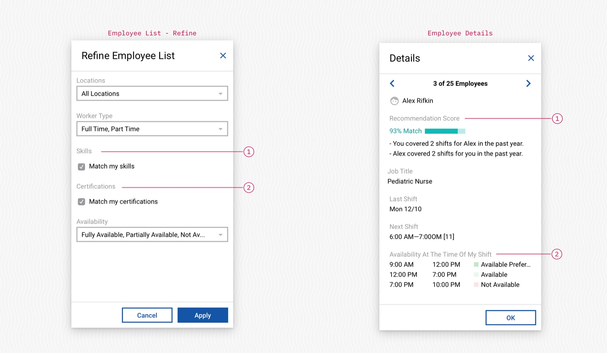
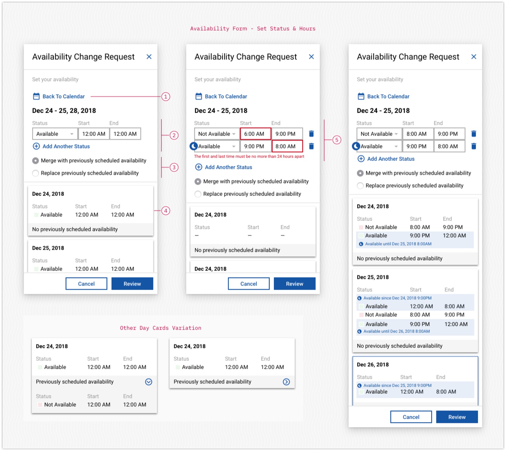

Scheduling tools for shift workers, staffers and managers
All UX: briefs, task analysis, wireflows, wireframes and behavior specs
As an interaction designer at Kronos, I designed how employees in hospitals and other shift-based workplaces change their schedules, and how managers and staffers review those changes. My part was UX: briefs, task analysis, wireflows, wireframes and behavior specs. The visual design team took it from there.
Request to Cover wireflow across employee, recipient and manager.
00.2
TL;DR
Featured
Request to Cover and Availability Request, from design brief to behavior specs.
My part
UX only. The visual design team took it from there.
Also
Absence Calendar, Staffing Assistant call list, Manage Periods and Fill Open Shifts.
Design briefs, personas, pain points
Task analysis
Wireflows across several roles
Rules, defaults and edge cases
Usability-test scenarios
Accessibility notes
01 / Request to CoverEmployee self-service + manager control center
01
Request to Cover: giving away a shift without the phone calls
01.1
When Howard, a facilities technician, couldn’t work a shift, he asked colleagues one by one, then waited for his manager. His questions were “How many people will I have to ask?” and “Will I still work my minimum hours?” I wrote the design brief: objectives, three personas (sender, receiver, manager), their pain points ranked by severity, and the scope.
01.2
Recommend who to ask
The employee list ranks colleagues by fit: a match score, “Usually accepts extra shifts”, and shared history like “Alex covered 2 shifts for you in the past year”. Filters cover skills, certifications and availability at the time of the shift. People who can’t take it stay visible, with the reason.
01.3
Shortest path from three entry points
Start from the home page tile, the calendar, or a day’s details. Coming from a day with one shift skips the shift list entirely.
01.4
Explain the rules before they block
Shifts that can’t be given away are greyed out with the reason, auto-approved shifts say so, and the sender reads “You are still responsible for your shift until someone else takes it.”
01.5
Show the manager the consequences
Rule violations per employee, with new ones in red and removed ones in green, and a warning that approving one acceptance refuses the others.
01.6

123
A match scoreWith the shared history behind it.
FiltersSkills, certifications, availability.
Availability at the time of the shiftSo the sender asks the right people.
I reused the Swap request’s patterns for consistency, wrote usability-test scenarios, and iterated the scope over four versions: from one-to-one up to many-to-many, then back to one-to-one and one-to-many, dropping groups and the open-shift market.
02 / Availability RequestEmployee self-service
02
Availability Request: telling your manager when you can work
An ER nurse wants to share when she can and can’t work, so her manager can schedule her in advance, instead of calling, emailing or leaving a note.
02.1

Set status and timeframes, merge or replace, then day cards that split overnight shifts.
02.2
Calendar first
Pick the days, then set statuses and timeframes. Three ways in: a day on the calendar, the New Request menu, or the Requests tile.
02.3
Smart defaults for merge or replace
I mapped every editing scenario (first or repeat edit, one day or many, with or without existing availability) and set a default for each: a first edit merges with what’s scheduled, and editing again replaces it.
02.4
Overnight shifts
One timeframe can run past midnight. The day cards split it into 24-hour days, “Available since 9:00 PM” and “Available until 8:00 AM”, and flag conflicts with the next day.
02.5
Soft alerts, not errors
Reducing your available hours shows a gentle note and never blocks the request. Overlapping timeframes get an inline error.
02.6
Manager review in numbers
Hours before and after, an increase or decrease marker per day, and rule violations, such as “Availability hours has been reduced by 2h.”
03 / More from Kronos4 projects
03
More from Kronos
03.1
Managers
Absence Calendar
A year view with three levels of information: requests the system doesn’t recommend approving, the number of incoming requests, then paycodes. Since Gantt views aren’t accessible, I wrote screen-reader guidance for the glances.
03.2
Staffers
Staffing Assistant call list
I joined after its first version. Open shifts on one side, the people who’d be a good fit on the other, with one-click assign and a data view the staffer can set up.
03.3
Admins
Manage Periods
I joined after its first version. A wireflow for setting up self-scheduling periods: one or several groups, opening by employee priority, recurring or rolling periods, and cyclical or sequential rotation.
03.4
Managers
Fill Open Shifts
A wireflow from the SMS Quick Fill tile: pick the open shift, choose employees, send the message.
04 / How I workedBrief → handoff
04
How I worked
04.1
Design brief
Objectives, personas, pain points, scope
04.2
Task analysis
How people do it today
04.3
Wireflow
Every role, every entry point
04.4
Wireframes and specs
Behavior, defaults, edge cases
04.5
Usability tests
Prototype and task scenarios
04.6
Handoff
To the visual design team and developers
04.7
Each deliverable was documented with a version history, so developers and the visual design team could follow how the behavior changed. A thread you’ll also see in my later work: explain the rules before they block people, and give whoever decides the information they need.